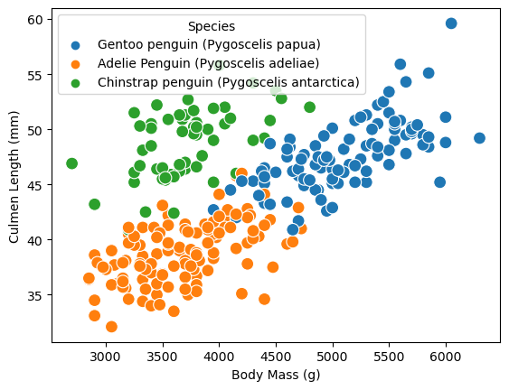
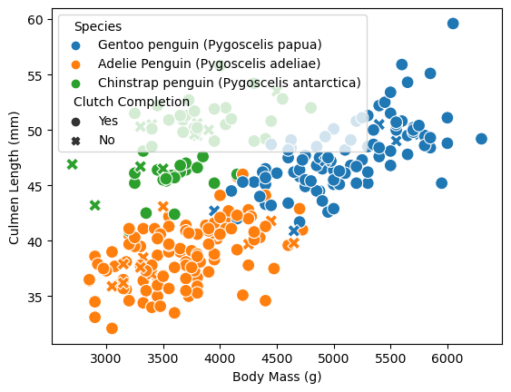
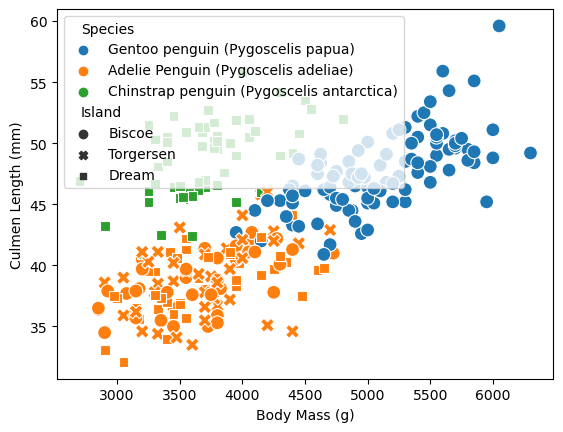

import pandas as pdimport seaborn as snsimport matplotlib.pyplot as plttrain_url ="https://raw.githubusercontent.com/middlebury-csci-0451/CSCI-0451/main/data/palmer-penguins/train.csv"train = pd.read_csv(train_url)train.head()
sns.scatterplot(x='Body Mass (g)', y='Culmen Length (mm)', hue='Species', data=train, s=100)
<AxesSubplot:xlabel='Body Mass (g)', ylabel='Culmen Length (mm)'>

We observe 3 clear clusters on this chart. Adelie and Chinstrap penguins tend to be significantly lighter than Gentoo penguins. However, for the same body mass, Chinstrap penguins have a significantly greater Culmen length. We also observe a general correlation between culmen length and body mass. Based on these two variables alone, our dataset is not linearly separable.
train.groupby(['Species'])[["Culmen Length (mm)", "Culmen Depth (mm)", "Flipper Length (mm)", "Body Mass (g)", "Delta 15 N (o/oo)", "Delta 13 C (o/oo)"]].aggregate([np.mean]).round(3)
Culmen Length (mm)
Culmen Depth (mm)
Flipper Length (mm)
Body Mass (g)
Delta 15 N (o/oo)
Delta 13 C (o/oo)
mean
mean
mean
mean
mean
mean
Species
Adelie Penguin (Pygoscelis adeliae)
38.710
18.366
189.966
3667.094
8.855
-25.825
Chinstrap penguin (Pygoscelis antarctica)
48.720
18.443
195.464
3717.857
9.339
-24.543
Gentoo penguin (Pygoscelis papua)
47.757
15.035
217.650
5119.500
8.240
-26.169
The above table gives us a table representing some summary statistics for each penguin. We observe the overage Culmen length, Culmen depth, flipper length, body mass and the ratio of certain isotopes of carbon and nitrogen.
This table gives us the the number of each type of penguin on each island. We see that Torgersen island only has Adelie penguins, Dream island has no Gentoo penguins, and Biscoe island does not have Chinsstrap penguins. If we had to guess the type of penguin based on its island alone, we could be reasonably successful! If our dataset only had Chinstrap and Gentoo penguins, we could guess the species based on the island with 100% certainty.
As we can see, most penguins in each category have clutch completion at approximately the same rates. Let us go back to our first visualization and look at how clutch completion factors into the relationship between body mass and culmen length.
<AxesSubplot:xlabel='Body Mass (g)', ylabel='Culmen Length (mm)'>

It is not clear how clutch completion relates to these two features. Let’s try the same thing with the island of each penguin.
sns.scatterplot(x='Body Mass (g)', y='Culmen Length (mm)', hue='Species', data=train, style='Island', s=100)
<AxesSubplot:xlabel='Body Mass (g)', ylabel='Culmen Length (mm)'>

Model
Find three features of the data and a model trained on those features which achieves 100% testing accuracy. Select these features through a reproducable process
One feature should be qualitative
Two should be quantitative.
Feature selection
import warningswarnings.filterwarnings("ignore") #I got a whole load of warnings making my notebook look ugly.from itertools import combinationsfrom sklearn.linear_model import LogisticRegression# these are not actually all the columns: you'll # need to add any of the other ones you want to search forall_qual_cols = ["Clutch Completion", "Sex", "Island", "Island", "Island"]all_quant_cols = ['Culmen Length (mm)', 'Culmen Depth (mm)', 'Flipper Length (mm)', "Body Mass (g)", "Delta 15 N (o/oo)","Delta 13 C (o/oo)"]for qual in all_qual_cols: qual_cols = [col for col in X_train.columns if qual in col ]for pair in combinations(all_quant_cols, 2): cols = qual_cols +list(pair) LR = LogisticRegression() LR.fit(X_train[cols], y_train) score=LR.score(X_train[cols], y_train)if score==1:print(cols, score)# you could train models and score them here, keeping the list of # columns for the model that has the best score.
It looks like we have three combinations giving us 100% accuracy! Let’s test one of them again.
from sklearn.linear_model import LogisticRegression# this counts as 3 features because the two Clutch Completion # columns are transformations of a single original measurement. # you should find a way to automatically select some better columns# as suggested in the code block abovecols = ['Island_Biscoe', 'Island_Dream', 'Island_Torgersen', 'Culmen Length (mm)', 'Culmen Depth (mm)']LR = LogisticRegression()LR.fit(X_train[cols], y_train)score=LR.score(X_train[cols], y_train)print(score)warnings.resetwarnings() #warnings are still useful! I am reactivating warnings.